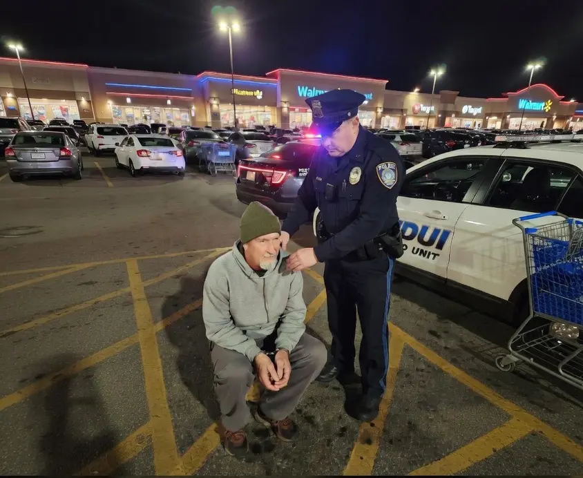
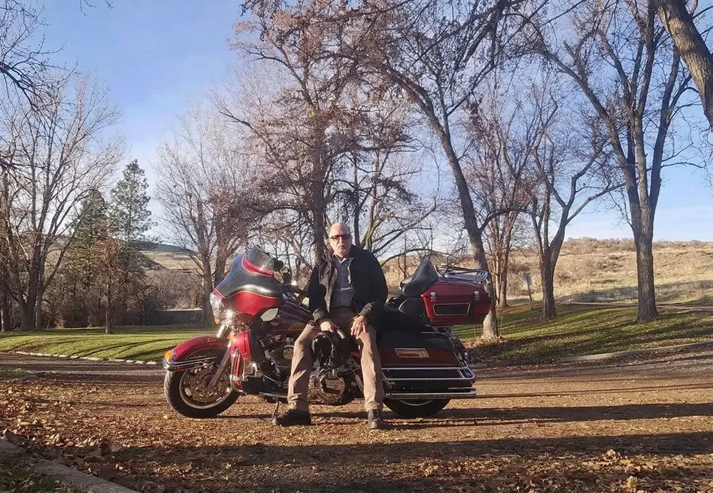
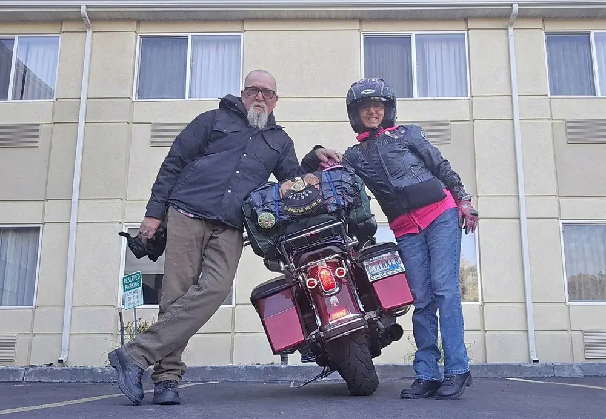

Now Available
"A Veteran’s Journey Through Addiction, Accountability, and Redemption."
Available on Kindle & Print— Don Lineberry
Raised in the quiet, patient embrace of Idaho's river bottoms, Don found a sanctuary from the unspoken pressures of being a preacher's kid. Seeking purpose, he answered the call of the U.S. Army. From Fort Knox to the shadow of the Iron Curtain in Germany, commanding an M60A1 tank provided structure and brotherhood. Yet, beneath the deafening noise of the treads, a quiet drift and unseen cracks began to form.

When the rigid structure of the military vanished, civilian life slowly unraveled. Decades of self-medication replaced the camaraderie of the crew. Marriages frayed, a farm dream was shattered by a DEA raid, and long-haul trucking devolved into a rolling blackout chamber. The descent ended brutally in a Walmart parking lot, leading to 197 days in a Twin Falls jail cell. Rock bottom had arrived.

In that cell, out of excuses and out of moves, grace found a crack to slip through. A Veterans Justice Outreach (VJO) Specialist extended a lifeline. Through the Boise Rescue Mission’s year-long, faith-based New Life Program, Don rebuilt his life from the foundation up. It was a grueling process of facing his demons, doing the hard mental work, and finding a spiritual renewal he thought he had lost forever.

Today, the rumble of the tank has been replaced by "Lucy," his Harley-Davidson. Riding two-up with his wife Janet, wind therapy clears the noise of the past. As Director of the American Legion Riders and a Case Manager for the very mission that saved him, Don stands as living proof that no veteran is too far gone.
"A hand up, not a handout."
For every book sold, $1.00 goes directly to support the Boise Rescue Mission's Veterans Ministry Program, funding their continuing work with veterans from across the U.S.A. By purchasing this book, you are directly supporting the rehabilitation, sheltering, and counseling of brothers and sisters still fighting their battles in the shadows.
Podcasts, speaking engagements, interviews, and events — if Don's journey would resonate with your audience, reach out below and he'll be in touch.